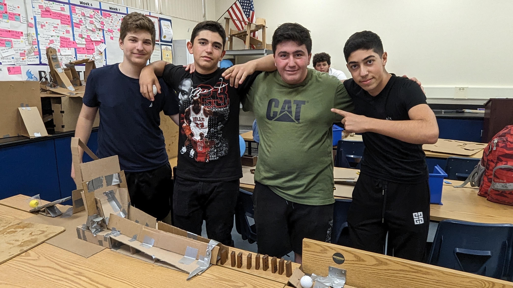

8/25/23 - This week started working on our websites. We added names to it and added pictures and today we are added our favorite food website and we are writing our first journal entry and we did our challenge day. I learned code for how to make lines and change the color backgrounds and add a picture. I remember from Wednesday that we are not allowed to use knifes in inappropriate ways. The challenge went well for our team because we got the marble in. I want to play games this weekend.

In-N-Out Burger Recipe
9/1/23 - This week we learned about the safety wear you need such as eye wear and aprons. For our challenge this week we needed to recreate a house appliciance in CAD. I made a ironing table with an iron and my favorite jersey on it. The challenge went well even though I didn't win I did good.
9/8/23 - My weekend was great because my cousins slept over at my house. I learned about a rube goldburg machine and how to CAD. Our rube goldburg machine will pop a ballon at the end of the chain reaction. We are using a lever, ramp, and pully. I think the most challenging part is to get everything to connect to each other.
9/15/23 - Last week we worked on our Rube Goldberg machines. We made a lever, ramp, and a pully system. Our machine was working for the most part, but at the end it wasn't popping the ballon, but finally at the very last stretch we got the ballon to pop. We could have measured everything and made it even and we could have made our CAD better. My and my teamates worked very well together and I contributed by measuring somethings and cutting. I also helped by pitching ideas
9/22/23 - My floatation device worked well and so did my E. My floatation device lasted the time of 5 minutes and my E was all the correct dimentions. I learned that simple is sometimes better. Computer enginnereing does intrest me because of the pay.

9/28/23 - This week I learned a lot of stuff about computer enginnering and I learned about the different parts of a computer. This week we disected a computer and looked at the different parts of it. I learned how they work by seeing all the parts and getting taught how they work. This weekend I have soccer game.
10/6/23 - I learned that bioenginnering helps with making prosthetics. We made 4 fingers with one block by the wrist to catch the bottle we were trying to grab. I would have made the fingers longer to help the grip. I have a party on the weekend to go to, and yes, I am going to homecoming.

10/13/23 - This weeks topic was aerospace enginnereing. We learned how they make rockets and missle. The 4 forces are weight, drag, lift,and thrust. This class is fun because we get to do projets with our classmates and bond with eachother. This class would be more fun without any tests.